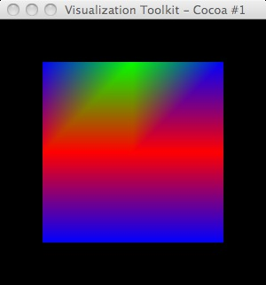

# vtk DataFile Version 3.0 vtk output ASCII DATASET STRUCTURED_POINTS DIMENSIONS 3 3 1 SPACING 1 1 1 ORIGIN 0 0 0 POINT_DATA 9 FIELD FieldData 1 Id 1 9 char 0 0 0 2 2 2 0 1 0
import vtk
# blue -> red LUT
lutBlueRed = vtk.vtkLookupTable()
lutBlueRed.SetHueRange(0.667,0.0)
lutBlueRed.Build()
ren1 = vtk.vtkRenderer()
renWin = vtk.vtkRenderWindow()
renWin.AddRenderer(ren1)
iren = vtk.vtkRenderWindowInteractor()
iren.SetRenderWindow(renWin)
reader = vtk.vtkDataSetReader()
reader.SetFileName('rwh.vtk')
aax = vtk.vtkAssignAttribute()
aax.SetInputConnection(reader.GetOutputPort())
aax.Assign("Id","SCALARS","POINT_DATA")
aax.Update()
srange = aax.GetOutput().GetScalarRange()
print 'CellId range: ',srange
mapper = vtk.vtkDataSetMapper()
mapper.SetInputConnection(aax.GetOutputPort())
mapper.ScalarVisibilityOn()
mapper.SetScalarRange(srange)
mapper.SetLookupTable(lutBlueRed)
actor = vtk.vtkActor()
actor.SetMapper(mapper)
actor.GetProperty().SetInterpolationToFlat()
ren1.AddActor(actor)
renWin.SetSize(300,300)
renWin.Render()
iren.Start()

Left: InterpolationToFlat; Right: commented out, i.e. Gouraud
Notice that the upper-left scalar value of a pixel is used to color the (flat shaded) pixel.